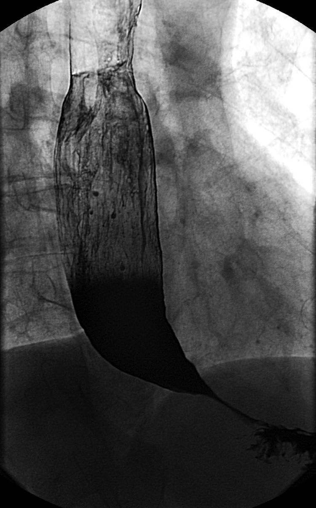
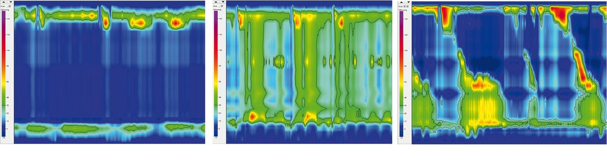
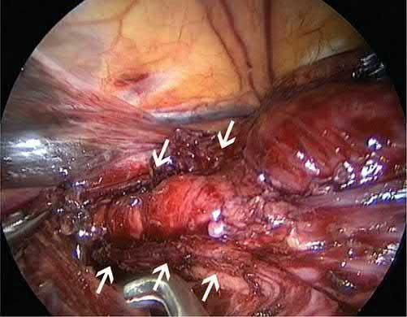
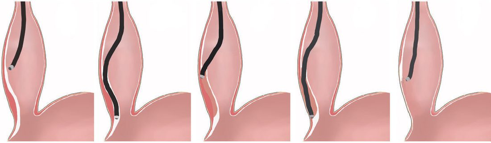

Achalasia
Summary
- Achalasia (from the Greek "khalasis," meaning failure to relax) is the most common oesophageal motility disorder, characterised by absent oesophageal peristalsis and failure of the lower oesophageal sphincter (LES) to relax with swallowing [1].
- It is a rare disease, with an incidence of roughly 1 per 100,000 individuals and a prevalence of 1.8–12.6 per 100,000 per year, affecting men and women equally, with a mean age at diagnosis around 50 years and peaks around 30 and 60 years [1][2].
- Treatment is palliative rather than curative, as no therapy reverses the underlying neuronal degeneration [1].
Definition
Achalasia is defined manometrically as absent esophageal peristalsis together with impaired relaxation of the LES (incomplete or absent relaxation), and is classified into three subtypes by the Chicago classification based on the pattern of esophageal pressurization: Type I (incomplete LES relaxation, aperistalsis, no esophageal pressurization), Type II (incomplete LES relaxation, aperistalsis, panesophageal pressurization in ≥20% of swallows), and Type III (incomplete LES relaxation, aperistalsis, spastic contractions in ≥20% of swallows) [2].
Pathophysiology
- Achalasia results from selective degeneration of inhibitory neurons of the esophageal myenteric (Auerbach's) plexus that contain nitric oxide and vasoactive intestinal polypeptide, which are required for peristalsis of the esophageal body and relaxation of the LES; excitatory (acetylcholine-containing) neurons are spared, so the LES fails to relax properly and is often hypertensive [2].
- Histology shows a reduced number of ganglion cells with variable chronic inflammation, postulated to result from a virus-induced autoimmune effect [1][3].
- The mismatch between excitatory and inhibitory neural activity causes failure of LES relaxation and absent peristalsis; over time the esophagus dilates, contractions disappear, and emptying occurs mainly by hydrostatic pressure, nearly always incompletely, leading to a progressively tortuous, dilated "megaoesophagus" [1].
- Persistent retention oesophagitis from fermenting food residue may predispose to oesophageal carcinoma [1][3].
- Secondary forms include Chagas disease, caused by Trypanosoma cruzi infection (destroys the myenteric plexus, with effects on the heart, brain, and GI tract as well), and pseudoachalasia caused by malignancy (especially cancer of the esophagus or gastric cardia), which should be excluded in older patients (>60 years) with short symptom duration and significant weight loss [1][2].
- Achalasia is also part of Allgrove (triple A) syndrome, achalasia, alacrimia, and adrenal insufficiency [1][2].
Clinical features
- Dysphagia for both solids and liquids is the most common symptom, present in approximately 95% of patients [2]; the Oxford Handbook notes initial dysphagia may be worse for liquids than solids as disease progresses [4].
- Regurgitation of undigested food occurs in about 70% of patients and can cause aspiration with cough, hoarseness, and recurrent pneumonia [2].
- Heartburn occurs in 40–50% of patients but is due to stasis and fermentation of undigested food rather than true acid reflux; when misattributed to GERD, patients may be treated with acid-reducing medication or even referred for antireflux surgery, delaying correct diagnosis ("refractory GERD" pitfall) [1][2].
- Chest pain occurs in 40–50% of patients, thought to be secondary to esophageal distention [2].
- Weight loss may or may not occur, as patients often adjust their diet [1].
- Aspiration-related respiratory symptoms, halitosis from fermenting retained food, and regurgitation of previously ingested food are also reported [1].
Etiology
The exact etiology of the degenerative process remains unknown; some viruses (varicella-zoster, human papilloma, herpes) have been implicated in triggering an inflammatory/autoimmune reaction [2]. Secondary causes include Chagas disease (Trypanosoma cruzi) and pseudoachalasia from malignancy; Allgrove syndrome is a rare genetic cause [1][2].
Diagnosis
- Esophagogastroduodenoscopy (EGD) is usually the first test for dysphagia but is normal in about 40% of patients (30–40% per Bailey & Love); it may show retained food/saliva or stasis/Candida esophagitis, and is essential to exclude pseudoachalasia from malignancy [1][2][3].
- Barium swallow shows distal esophageal narrowing with a "bird's beak" or "rat's tail" tapering, an air-fluid level, slow emptying, tertiary contractions, and, with progression, a dilated tortuous "sigmoid" esophagus; a timed barium oesophagogram quantifies contrast retention height to assess severity [1][2].
- High-resolution esophageal manometry is the gold standard, establishing the diagnosis and classifying the achalasia subtype (I, II, or III), which has important treatment implications [1][2].
- Manometry classically shows high/normal basal LES pressure with incomplete LES relaxation and poor or absent peristalsis [3][4].
- Ambulatory pH monitoring is recommended for patients with heartburn to distinguish achalasia from GERD; one study found 29% of patients eventually diagnosed with achalasia had been treated for an average of 29 months with PPIs beforehand [2].
- Functional lumen imaging probe (FLIP) is a newer complementary test assessing esophageal compliance and distensibility [2].

Scoring and Severity
The Eckardt score is a clinical scoring system used to assess achalasia severity and monitor treatment response, assigning 0–3 points each to four symptoms (dysphagia, regurgitation, weight loss, and chest/retrosternal pain) for a total range of 0–12; a score of ≤3 indicates successful treatment [1][2]. The Chicago classification subdivides achalasia into Types I, II, and III based on high-resolution manometry pressurization patterns, which guides treatment choice and predicts outcome [1][2].

Treatment and Management
- Treatment is palliative, aiming to reduce the functional obstruction from the nonrelaxing, often hypertensive LES [2].
- Pharmacologic therapy (calcium channel blockers such as nifedipine, phosphodiesterase-5 inhibitors such as sildenafil, nitrates) has limited efficacy and notable side effects (headache, oedema, hypotension), and is reserved for patients who are poor candidates for endoscopic or surgical treatment [1][2].
- Endoscopic botulinum toxin injection into the LES gives symptom relief in about 70–80% of patients at 1–3 months, falling to roughly 40% at 12 months, and is generally reserved for elderly/comorbid patients unsuitable for myotomy or dilatation, since repeated injections can cause scarring that complicates subsequent surgery [1][2].
- Pneumatic dilatation uses a graded approach starting with a 30 mm balloon, reserving 35 mm and 40 mm balloons for persistent/recurrent symptoms; it is effective in roughly 80% of patients but with higher retreatment rates than surgery, and predictors of poor response include age <40, male sex, large esophageal diameter, and Chicago type I/III [2][3].
- Perforation risk with a 30 mm balloon is under 0.5%, rising with larger balloons; overall reported perforation incidence averages about 1.9% [1].
- A European RCT (PD vs. laparoscopic Heller myotomy with Dor fundoplication) found similar therapeutic success at 2 years (86% vs. 90%) and 5 years (82% vs. 84%), though 25% of PD patients needed additional dilatations [2].
Surgeries
- Laparoscopic Heller myotomy (LHM) with partial fundoplication is now the standard surgical treatment, dividing the circular muscle of the lower esophagus and gastric cardia, typically extending about 6 cm proximally on the esophagus and 2–3 cm distally onto the stomach [1][3].
- A partial fundoplication (anterior Dor or posterior Toupet) is added to reduce postoperative GERD, which can occur in up to 40–50% of patients after myotomy alone; a complete 360° (Nissen) fundoplication is contraindicated as it causes outflow resistance against an aperistaltic esophageal body, risking dysphagia [1][2][5].
- The Padua group reported a 90% success rate among 407 LHM patients at 2.5-year median follow-up, with 87% 5-year actuarial probability of remaining asymptomatic; a Swedish RCT versus pneumatic dilatation showed 92% excellent results at 5 years and 80% at 10 years after LHM [2].
- Surgical outcomes are better for type I and II achalasia than type III, which may need a longer, more proximally extended myotomy [1][2].
- Peroral endoscopic myotomy (POEM) is a purely endoscopic myotomy via a submucosal tunnel, extending a minimum of 6 cm proximally and 2 cm onto the gastric cardia, closed with endoclips; it achieves symptom relief in >90% of patients, similar to LHM, and is particularly advantageous for type III achalasia because the myotomy length can be tailored [1][2].
- Because POEM has no antireflux component, postprocedure GERD is markedly more common than after LHM with fundoplication, pathologic reflux around 47–57% after POEM versus roughly 11–20% after LHM in comparative studies, including a multicenter RCT of 221 patients [1][2].
- Esophagectomy is reserved as a last resort for end-stage achalasia with a massively dilated, sigmoid ("megaoesophagus") that has failed other treatments, given the risk of aspiration and regurgitation from a poorly emptying esophagus; a 2001 series of 93 esophagectomies reported anastomotic leak in 10%, recurrent laryngeal nerve injury in 5%, and 2 deaths, with 50% developing anastomotic stricture [1][2].


Complications
- Complications of pneumatic dilatation include esophageal perforation (roughly 1.9% average incidence, lower with smaller balloons) [1].
- Complications of Heller myotomy include mucosal perforation (increased risk in patients with prior botulinum toxin injection due to loss of normal tissue planes) and postoperative GERD, esophagitis, Barrett esophagus, and even adenocarcinoma with long-term reflux exposure, particularly relevant in younger patients [2].
- POEM carries a high incidence of postprocedure reflux/esophagitis (up to 57% at 3 months in some series), potentially requiring lifelong acid suppression or a later antireflux operation [1].
- Recurrent dysphagia after treatment is common, particularly in younger patients, most often due to scarring at the distal myotomy or development of a peptic stricture from reflux; full re-evaluation (barium swallow, endoscopy, manometry, pH monitoring) is needed before further intervention [2].
- Long-standing achalasia with chronic retention oesophagitis is associated with an increased risk of oesophageal carcinoma, typically squamous cell carcinoma, occurring late in the disease course [1][3].
Prognosis
- Achalasia cannot be cured, only palliated, since neuronal degeneration is irreversible [1].
- With laparoscopic Heller myotomy, long-term symptom control is excellent, with several series reporting 84–92% success at 5 years and around 80% at 10 years [2].
- POEM and LHM show comparable clinical success rates (roughly 81–93% at 2 years across studies) though POEM carries a substantially higher rate of pathologic reflux [2].
- Considering the rarity and complexity of achalasia, best results are achieved through multidisciplinary evaluation with treatment tailored to the individual patient [2].
References
- Bailey & Love's Short Practice of Surgery, 28th ed., Ch. 66, The oesophagus
- Sabiston Textbook of Surgery, 22nd ed., Ch. 83, Benign Esophageal Disorders
- The ABSITE Review, 2022, Ch. Esophagus, autoimmune is the #1 proposed mechanism, also infectious and genetic
- Oxford Handbook of Clinical Surgery, 5th ed., Ch. 8, Upper gastrointestinal surgery
- Schwartz's Principles of Surgery: ABSITE and Board Review, Ch. 25, The Esophagus and Diaphragmatic Hernia
- Maingot's Abdominal Operations, 13th ed., Ch. 22